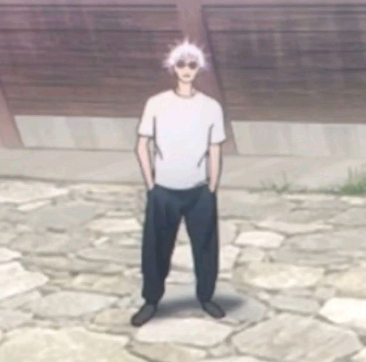

Satoru Gojo
Unvan En Güçlü Büyücü
Teknik Limitless (Sonsuzluk), Altı Göz
Gojo, modern büyücülük dünyasının zirvesinde yer alır. Sonsuz lanet enerjisi ve mekan algısı ile dünyanın en güçlü büyücüsüdür. Düşmanlarına karşı acımasızdır.